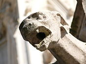
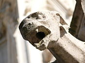

Gargoiles
Find it
Let's see if you can find this one.
First clue:
It's outside the building. Near the front door and pretty high.
Second clue:

It's the red dot in the map.
Let's see if you can find this one.
It's outside the building. Near the front door and pretty high.
It's the red dot in the map.